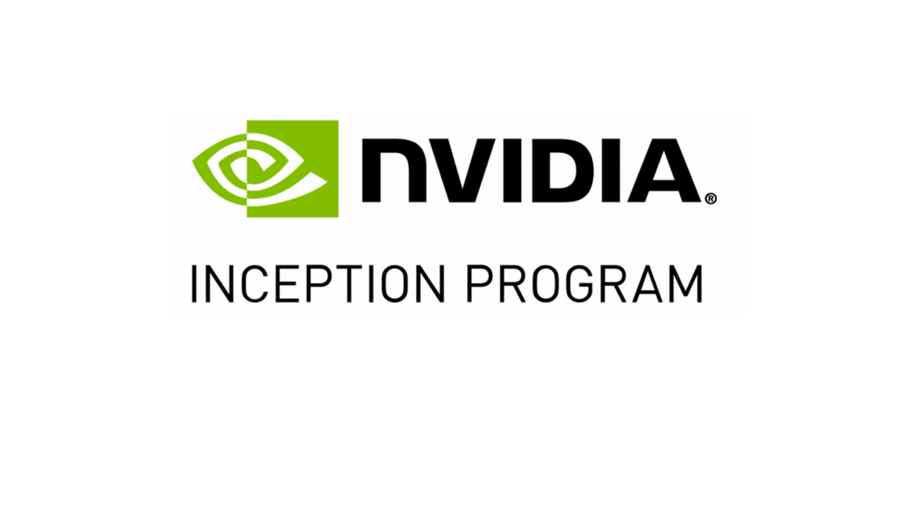

תעודת זהות
שנת הקמה: 1993
מדינת מקור: ארצות הברית
מייסדים: ג׳נסן הואנג, כריס מלאכובסקי, קרטיס פרים
מוצרים מרכזיים: GPU, CUDA, DGX, Hopper, Blackwell
Global AI Infrastructure
חברת שבבים ותשתיות מחשוב שהפכה לאחת החברות החשובות ביותר במהפכת הבינה המלאכותית המודרנית.

שנת הקמה: 1993
מדינת מקור: ארצות הברית
מייסדים: ג׳נסן הואנג, כריס מלאכובסקי, קרטיס פרים
מוצרים מרכזיים: GPU, CUDA, DGX, Hopper, Blackwell
NVIDIA נבנה סביב הרעיון של עיבוד חזותי ומחשוב גרפי מתקדם.
עם השנים השם עבר מזיהוי עם כרטיסי מסך לזיהוי עם תשתיות חישוב לבינה מלאכותית.
החברה החלה בתחום המעבדים הגרפיים למשחקים ולגרפיקה ממוחשבת.
המעבר לשימוש ב־GPU עבור חישוב מקבילי הפך אותה לשחקנית מרכזית באימון והרצת מודלי AI.
CUDA והמעבדים הגרפיים של NVIDIA אפשרו לחוקרים ולחברות לאמן מודלים גדולים מהר יותר ובקנה מידה רחב.
1993: הקמת NVIDIA.
שנות ה־2000: התחזקות ה־GPU כמנוע חישוב מקבילי.
2006: CUDA מרחיבה את השימוש ב־GPU למחקר וחישוב.
2012: קפיצת AlexNet מדגישה את חשיבות ה־GPU ללמידה עמוקה.
2020 ואילך: NVIDIA הופכת לתשתית מרכזית של מרכזי נתונים ו־AI גנרטיבי.
NVIDIA אינה רק חברת חומרה: היא סיפקה את שכבת החישוב שאפשרה את ההאצה הגדולה של מודלי AI מודרניים.
הלוגו מוצג לצורכי זיהוי חינוכי ומוזיאלי בלבד.